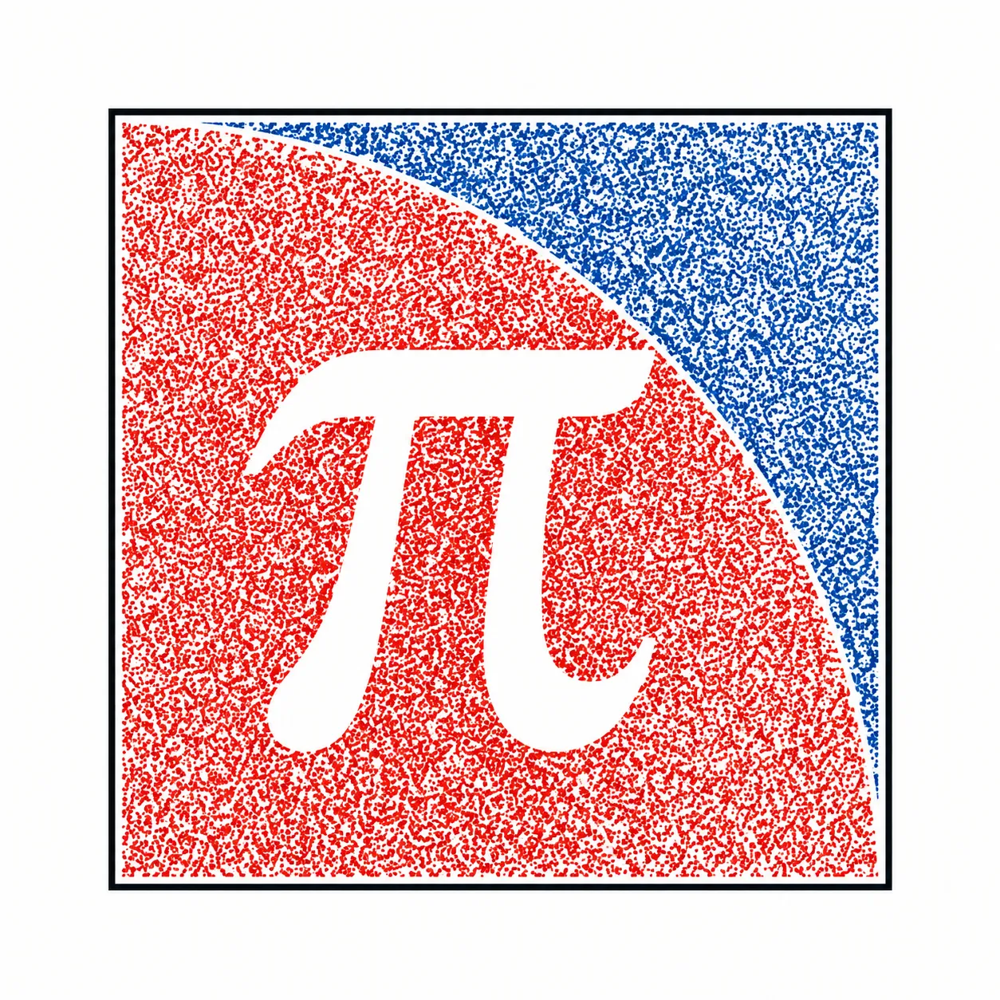
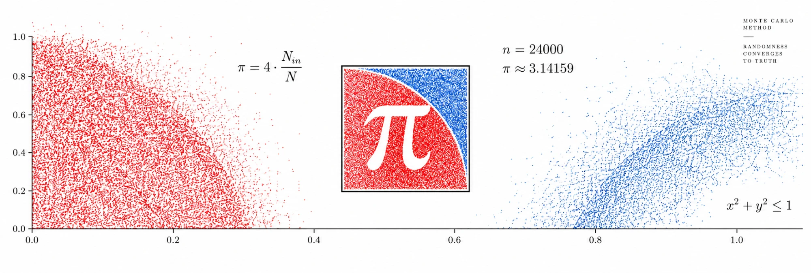

A quote that reports its own error
Nine tokenised-equity feeds, one session, one free call
Preprint v1, 20 September 2026
Keywords. Asian options, Monte Carlo, standard error, deviation feeds, volatility clustering, view calls

1The price nobody quoted
The on-chain option protocols surveyed in [1] price from a closed form. An option on the average price over a session has none: the arithmetic mean of lognormal prices is not lognormal, and the standard treatment is simulation [4]. It is also the natural contract for a chain to settle. The average of a feed's own prints over a session is public, needs no second source, and one bad print moves it by a twenty-sixth of what it moves a close. So the contract that is easiest to settle on chain was the one that could not be quoted there. This paper quotes it, and returns with every price the standard error of the estimate that produced it, so that the number and the noise around it arrive together.
2The walk
One step is five minutes and a session is 78 steps. The log price moves by a normal draw scaled by the current standard deviation, and the variance for the next step is a fixed weight on the last squared move plus a fixed weight on the last variance:
This is GARCH(1,1) [5], and with α = β = 0 it is geometric Brownian motion. The coefficients are the per-ticker fits of [2], carried in the contract as constants, all in 1e18 (Table 1). The arithmetic is that of [1]: the standard deviation is a square root warm-started from the previous step with five Newton passes, each normal draw is one hash, and for a terminal payoff the exponential runs once a path. The average-price payoff needs the price itself at the points it averages, here every third step, so it exponentiates twenty-six times a path instead of once; Section 5 prices that difference.
Table 1. The coefficients carried per feed, from [2]. The long-run volatility is ω/(1 − α − β) per step, annualised over 78 steps a day and 252 days. The half-life is the number of five-minute steps for a shock to the variance to decay by half.
| feed | α | β | α + β | half-life | long-run vol |
|---|
3Where the variance comes from
The walk needs a variance to start from. The usual source is a number imported from off chain or agreed by a vote [1]; here it is read from the feed itself. A deviation feed publishes when its price has moved by a fixed fraction δ of its value. For a driftless walk the expected time to travel δ is δ2/σ2, so the number of publications per second of trading time is the variance per second, and per five-minute step
taken over the feed's last sixty-four rounds, with δ the median absolute change between consecutive answers, n the number of gaps shorter than two hours and T their sum. Gaps longer than two hours are overnight or weekend and are not trading time. The same computation is run off chain on cached rounds and compared with the standard deviation of five-minute bar returns over the same span: on — windows across the nine tickers the ratio of the two has median —, tenth percentile — and ninetieth percentile —, and — percent of windows fall within a third of realized (Table 2). The estimate is coarse where the feed is quiet: SPY publishes about once a day, so its sixty-four rounds span two months and Table 2 has a single window for it.
Table 2. Volatility read from the feed's rhythm, divided by realized five-minute volatility over the same span, per ticker: the number of sixty-four-round windows, the median ratio and its range.
| feed | windows | median ratio | range |
|---|
4The error bar
A quote is the mean of the payoffs over N paths and the standard error of that mean, s/√N, with s the sample standard deviation of the payoffs. The check is the Brownian limit, where the vanilla call has a closed form [3]. A hundred quotes of 128 paths each are priced at three strikes. Their average sits on Black-Scholes within — standard errors of the hundred-quote mean at every strike, and the error each quote reports agrees with the spread the hundred actually show to within — percent (Table 3). The error bar is not a decoration on the estimate; it is the estimate's own measurement of itself, and it is right.
Table 3. A hundred quotes of 128 paths against the closed form, spot 100, constant variance 4 × 10−6 per step, 78 steps. Prices in units of spot.
| contract | Black-Scholes | mean of 100 | reported error | observed spread | ratio |
|---|
5Cost
Table 4 prices one quote at 78 steps as the paths grow, for the vanilla call, which exponentiates once a path, and for the average-price call, which exponentiates twenty-six times. The public node's budget for a view call was measured directly rather than assumed: with the engine's bytecode placed at an empty address by state override, the same average-price quote was asked with more and more paths until the node refused. It answered — paths and refused —, which by the slope of Table 4 puts the budget near — million gas. A live quote of 128 paths, including the sixty-five round reads that set the variance, costs between — and — million gas across the nine feeds.
Table 4. Gas for one quote at 78 steps, NVDA coefficients, as measured by the test suite.
| paths | vanilla call | average-price call |
|---|
6Quotes from the chain
Table 5 is the fork test at block —. For each feed it shows the spot the feed held, the volatility read from its rhythm, annualised, the threshold the feed was found to publish at, and the at-the-money average-price call for one session with its standard error, seed 1, 128 paths.
Table 5. Nine feeds at one block. Prices in dollars; the error is the standard error of the quote, then as a share of it.
| feed | spot | vol from rhythm | δ | call ± error | share | gas |
|---|
| feed | spot | feed age | call ± error |
|---|
Table 6. NVDA option chain from one free call.
| strike | of spot | call ± error | put ± error |
|---|
Thirty-two strikes, calls and puts, each with the standard error of its estimate, priced by StripLive from one set of 128 paths walked as 64 mirrored pairs. The error is computed across the pairs, not the paths. Same session, same average-price payoff and same variance as the quote above; the seed is the block number.
Seed is the block number, so the estimate is drawn afresh each time and moves inside its own error bar. Refreshed every minute; the panel stops when the tab is hidden. Outside the trading session the feed age is measured in hours because the feed itself is quiet.
7What this is and is not
It is a price with its uncertainty printed next to it, computed by a public contract from public inputs, and reproducible by anyone who has the seed. It is not a quote to trade on. At 128 paths the error is — to — percent of the price, and a thousand paths would cost about — million gas, several times the budget of Section 5. The variance it starts from is within a third of realized in five windows out of six, not all. Spot is the feed's last print, which outside a session can be hours old, and the age is returned with every quote. There is no discounting; the walk is a martingale at zero rate. Any contract that settles on this quote must average the same marks the walk averages, every fifteen minutes across the session, and must fix its own seed rule, because the engine takes the seed from the caller.
8Reproduction
test/Audit.t.sol writes Tables 3 and 4 during the run that checks them; test/Live.fork.t.sol writes Table 5 against the chain at the fixed block; tools/cadence.py writes Table 2 from the cached rounds and bars and stamps the SHA-256 of each input; tools/budget.py writes the node's budget. src/Engine.sol is the walk and the payoffs, src/Live.sol binds it to the feeds and reads the variance from their rhythm, src/Feeds.sol is generated from the fits of [2]. src/StripEngine.sol prices the strike strip of Table 6 from one set of paths, walked as mirrored pairs, and src/StripLive.sol binds it to a feed the same way.
forge test && python3 tools/cadence.py && python3 tools/budget.pyDeployment pending. The engine repository is at github.com/St0kesEth/st0kes.
References
- [1]St0kes. Making simulation affordable on chain. st0kes.blog/simulation, 2026.
- [2]St0kes. The term a Monte Carlo engine drops. st0kes.blog/intermittency, 2026.
- [3]F. Black, M. Scholes. The pricing of options and corporate liabilities. Journal of Political Economy 81, 637–654, 1973.
- [4]A. Kemna, A. Vorst. A pricing method for options based on average asset values. Journal of Banking and Finance 14, 113–129, 1990.
- [5]T. Bollerslev. Generalized autoregressive conditional heteroskedasticity. Journal of Econometrics 31, 307–327, 1986.